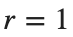
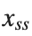
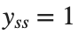
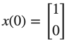
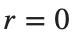

Reference Tracking과 Optimal Control
실행 조건
MATLAB · Control System Toolbox
학습 목표
안정한 제어기에서도 목표값 오차가 남는 이유를 확인하고, 추종 성능과 제어입력 비용을 비교합니다.
목표값을 따라가도록 Reference 이득 정하기
시작 조건

, x(0)=0입니다.진행 방법
- ,
 을 각각 넣어 같은 시간축에서 Unit Step을 계산하고 응답과 Steady State 출력값을 나란히 기록하세요.
을 각각 넣어 같은 시간축에서 Unit Step을 계산하고 응답과 Steady State 출력값을 나란히 기록하세요. - 에서
 일 때
일 때 
를 N의 식으로 구하세요. 를 이용해
을 만족하는 N을 구하고 계산 과정을 남기세요. - 직접 구한 N과 두 응답의 최종값을 대조해 Reference Gain이 바꾼 값을 설명하세요.
남길 결과
- 두 Step 응답과 Steady State 값, N을 구한 식.
A=[0 1;-2 -3]; B=[0;1]; C=[1 0]; K=place(A,B,[-2 -4]);
N=-1/(C*((A-B*K)\B)); disp(K); disp(N); assert(abs(N-8)<1e-10);
t=linspace(0,5,1001)'; figure; hold on
for gain=[1 N]
y=lsim(ss(A-B*K,B*gain,C,0),ones(size(t)),t);
plot(t,y,'DisplayName',sprintf('N=%g',gain));
end
xlabel('Time [s]'); ylabel('Position'); legend; grid on
결과 기록·자가 점검
N | |
Steady State 값 | |
Closed-loop Pole |
확인할 점
- 직접 계산한 Steady State 출력값이 각 시뮬레이션의 최종값과 일치하는가?
- N을 바꾸어도 Closed-loop Pole은 같은가?
출력 오차와 입력 비용의 절충
시작 조건
, 이며 입니다.

,
입니다.진행 방법
- 각 Q의 CARE를 풀고
 를 계산하세요.
를 계산하세요. - 같은 시간축의 위치와 제어입력을 그리세요.
- 위치 오차 제곱의 적분과 입력 제곱의 적분을 별도로 비교하세요.
남길 결과
- 위치·입력 그래프와 두 적분값의 비교표.
figure; hold on
for q=[1 25]
[Kq,P]=lqr(A,B,diag([q 1]),1);
x=initial(ss(A-B*Kq,zeros(2,1),eye(2),zeros(2,1)),[1;0],t); u=-x*Kq';
disp(q); disp(Kq); disp([trapz(t,x(:,1).^2) trapz(t,u.^2)]);
plot(t,x(:,1),'DisplayName',sprintf('q=%g',q));
end
xlabel('Time [s]'); ylabel('Position'); legend; grid on
% TODO: 제어입력 그래프와 Pole을 추가하세요.
결과 기록·자가 점검
q | |
K | |
위치 오차 적분 | |
입력 비용 |
확인할 점
- 두 Q가 모두 양의 정부호이고 인가?
 의 모든 Pole 실수부가 음수인가?
의 모든 Pole 실수부가 음수인가?
모델 오차가 있을 때의 목표 추종
시작 조건
설계는 명목 B로 하고, 실제 입력 이득만 , 로 바꿉니다.  , ,
, ,  입니다.
입니다.
입니다.진행 방법
- 각 실제 모델의 Pole과 Step 최종값을 구하세요.
- 명목 모델에서 계산한 N이 모든 실제 모델에서도 목표값을 정확히 맞추는지 확인하세요.
- Reference 이득 조정과 오차 적분 Feedback의 역할을 구분하세요.
남길 결과
- 세 응답 곡선과 최종값·오차 표.
K=[6 3]; figure; hold on
for g=[.8 1 1.2]
Ba=g*B; Acl=A-Ba*K; steady=-C*(Acl\(Ba*8));
y=lsim(ss(Acl,Ba*8,C,0),ones(size(t)),t); disp(g); disp(eig(Acl)); disp(steady);
plot(t,y,'DisplayName',sprintf('g=%g',g));
end
xlabel('Time [s]'); ylabel('Position'); legend; grid on
% TODO: 오차의 원인과 오차 적분 Feedback의 역할을 설명하세요.
결과 기록·자가 점검
입력 이득 | |
Pole | |
최종값 | |
추종 오차 |
확인할 점
- Feedback 항과 Reference 항 모두 실제 B_actual에 곱해졌는가?
- 최종값을 계산하기 전에 안정성을 확인했는가?